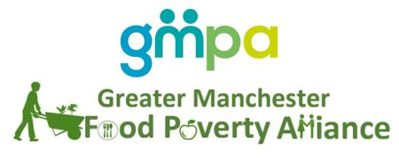

Collaborators
The main organisations involved in this process.

Good Food For GM
collaborator description collaborator description collaborator description collaborator description collaborator description collaborator description
Feeding GM
collaborator description collaborator description collaborator description collaborator description collaborator description collaborator description

Visit
Greater Manchester Food Poverty Alliance
collaborator description collaborator description collaborator description collaborator description collaborator description collaborator description